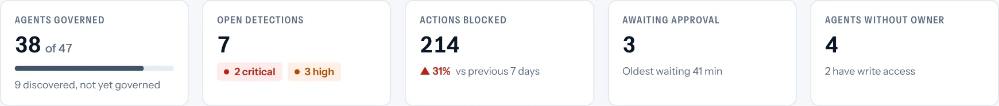
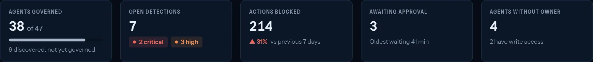

Your credit unionalready runs agentic AI.Do you know what it can reach?
Core platforms, employee copilots, lending and fraud tools are moving fast across the institution. Zenstra gives your credit union one governed identity and access layer for every agent, without slowing any of it down.
Every part of the institution is already touching agentic AI.
Most of this was not a strategic decision. It shipped with the platforms you already run.
Core-banking agent platforms
Fiserv agentOS, Jack Henry and Temenos ship agent runtimes inside the core you already operate, widening your governance surface whether or not you asked.
Employee copilots
Microsoft Copilot, ChatGPT and Gemini are usually the first agentic tools live, often before a formal policy exists.
Lending and underwriting agents
Document classification, decisioning and indirect-lending agents touch loan files end to end, from application to approval.
Fraud and AML agents
Pattern-detection and SAR-prep agents run continuously against transaction data, often with standing access into core systems.
Member service and knowledge layers
Member-facing chat and voice agents often share a knowledge base with an internal assistant. One poisoned answer can reach both.
Shadow and no-code automation
n8n, Zapier and similar tools let any team wire an agent into core systems without IT seeing the connector being created.
One quiet layer, wherever your agents run.
A small app on each employee's computer, much like the antivirus already there, plus a gateway in front of your core and agent platforms. Nothing to rip out, nothing for staff to learn.
On every device
The endpoint app watches AI activity in the background and stops risky actions on the spot.
Zenstra decision point
One policy set and one ledger for every agent, in your environment.
What it plugs into
Your identity provider (Okta, Microsoft Entra ID, Ping, Google Workspace) and your core and agent platforms (Fiserv, Jack Henry, Temenos).
Vendor defaults are not institutional governance.
Core platforms promise scoped permissions, human checkpoints and audit logging. Those describe what an agent can do. They do not say what your institution should allow, who owns the risk, or how drift is caught six months from now.
Controls inside one platform
- Identity-bound execution and kill switches as vendor defaults you cannot independently verify
- Acceptable-use policy written at the same time as rollout, with no live technical inventory
- Every MCP connector into core, LOS or CRM is an access grant missing from the risk register
One layer under every platform
- An inventory of every agent and connector, independent of any one core provider
- A review and approval step before an agent reaches production
- A revocation switch that works across platforms, in seconds
The same eight controls, mapped to how credit unions work.
There is no separate rulebook for AI, so the proof has to come from you.
Examiners already check that you run safely, treat members fairly, catch fraud and know what your vendors do. Those expectations apply to every agent your credit union uses. Zenstra creates the proof as your agents work.
- A living inventory. Every agent and connection, tracked automatically.
- Only the access it needs. Least-privilege proof generated as grants are issued.
- A complete audit trail. Every action recorded, not just the flagged ones.




Questions credit unions ask first.
Does Zenstra replace the controls in our core provider's agent platform?
No. It sits underneath them. Your core provider's controls still apply; Zenstra adds an inventory, a policy and a revocation switch that work across every platform, so your institution can verify them independently.
What does deployment involve for our IT team?
The endpoint app is deployed through your existing device management. The gateway runs in your environment in front of core and agent platforms. Most credit unions start with a pilot group and one platform.
Do staff need training?
No. Staff keep using the tools they already use. They only see Zenstra when an action needs approval or is blocked, with a plain explanation.
Where does member data go?
Prompts and payloads are evaluated inside your environment. Only decisions and redacted evidence reach the Zenstra control plane. The trust center lists exactly what leaves and what never does.
Bring one real agent.
Leave with the evidence.
- Connect your agent. Any framework, any model provider.
- Watch a policy stop it. Live injection and exfiltration attempts.
- Keep the ledger. The decision record and a security review pack.
No slideware. Runs against your own agent, in your own cloud.